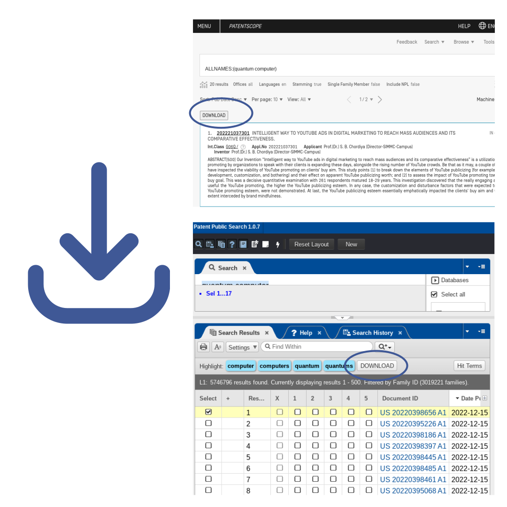

Smart Health Monitoring Wristwatch!Monitor your health vitals smartly anywhere you go.Pre Orders
PetapatorMake Patent Search More Efficient & Get Smarter Insights FasterInstall Chrome Extension
FeaturesEasy Download of Patent Search ResultsWith Petapator, you can download up to 500 search records with abstract, inventors, current assignee,
related events, detailed claims, as well as pdf link and image links, right from USPTO, Espacenet, WIPO and
Google Patents. The records are conveniently saved in .csv format so you can run more analysis
easily.Drawing Summary At A GlanceAccess all related drawings of a patent right on the search result summary page so you can quickly decide
if the patent is relevant to your search. You can even enlarge one or multiple images for a quick
review.One Chrome Extension for all the most popular patent search sitesPetapator works on USPTO, Espacenet, WIPO and Google Patents. It overlays the powerful, user-friendly
features on the original patent search sites that you are already familiar with. So there is no new learning
needed, it is intuitive and easy for you to use.
TestimonialsThe Petapator helps me achieve highly efficient patent search results required in patent examination
works.
Chrome Store User ReviewAmazing. Saves countless hours and missed searches.
Chrome Store User
ReviewThis plugin is a must for IP personnel.
Chrome Store User Review
Pricing:
Free
Basic - 10$ / month
Download up to 50 patent search results
Up to 5 patents with Drawing Summary & Drawing Enlargement
Single Chrome Extension for USPTO, Escapenet, WIPO and Google Patents
Download up to 500 patent search results
Unlimited Drawing Summary & Drawing Enlargement
Single Chrome Extension for USPTO, Escapenet, WIPO and Google Patents
FAQsHow do I start using Petapator?Install Petapator from Google Chrome Web StoreHow do I download patent search results using Petapator?Downloading your patent search results from USPTO, Espacenet, WIPO or Google Patents is easy. Simply
enable Petapator on your Chrome browser and visit one of these patent search sites. A DOWNLOAD button
will appear on top of your patent search results. Click on the DOWNLOAD button to start saving records
onto your computer. Depending on the size of the search result file, it may take a few minutes to
complete the download process. The results are saved conveniently in a .csv format so you can use your
favorite tools like Excel to run further analysis.How can I download more than 30 patent search results?Upgrade to a premium plan to download up to 1000s patent search results.How can I get the up-to-date version of Petapator?Petapator frequently launches new versions to enhance its functionality. You can easily update your
Petapator Chrome extension from Google Chrome Web Store.How do I submit suggestions and feedback for Petapator?If you have a suggestion or feedback for Petapator, you can email us at any time. We are constantly
working to improve the Petapator experience for patent professionals, and many of these changes come
directly from your feedback. Thank you for your continued support of Petapator!What is Petapator?Petapator builds technologies that help empower patent professionals. Since 2006, it has been helping
over thousands of users to make patent search more efficient and to get smarter insights faster.
Petapator is created for Patent Professionals by a patent professional. We keep frequent patent search
practices in mind and imagine ways to make them more efficient. Our latest version of the 5-star
solution enables powerful, user-friendly functions on USPTO, Espacenet, WIPO and Google Patents,
empowering patent professionals worldwide.What is a Chrome Extension?Google Chrome extensions are software programs you can install in your Chrome browser to enhance its
functionality. All Chrome extensions must go through a review process by Google before they can be
published to the public. The latest version of Petapator is developed with Chrome Extension
technologies. It enables powerful, user-friendly functions and a better user experience when you use
Chrome browser on popular patent search sites such as USPTO, Espacenet, WIPO and Google Patents.What browser does Petapator support?The latest version of Petapator is developed with Chrome Extension technologies. It supports the
Chrome browser and enables powerful, user-friendly functions and a better user experience when you using
it on popular patent search sites such as USPTO, Espacenet, WIPO and Google Patents.Is Petapator free?Yes, Petapator offers a Free plan that lets you download up to 30 patent search results at any given
time. You can access all related drawings of a patent right on the search result summary page so you can
quickly decide if the patent is relevant to your search. You can even enlarge one or multiple images for
a quick review. Get started today!What payment methods does Petapator accept?Petapator accepts VISA, Mastercard and Paypal.How do I cancel my subscription?Petapator subscribers can cancel or switch their subscriptions at any time. Simply log in to your
Petpator account and select Cancel Subscription. You will continue to have access to Petapator’s premium
benefits until the end of your current billing cycle but will not be charged moving forward. We do not
refund or credit for partially used billing periods.Does Petapator know my patent search results?Petapator does not collect or use your data. To enable the DOWNLOAD search result function, Petapator
processes your search result information but does not keep any record of your usage. See our privacy
policy.Why does Petapator need to access the patent search sites?Petapator enhances your user experience on USPTO, WIPO, Espacenet and Google Patents. To add
functionality on the most popular patent search sites, Petapator improves the experience on the
following specific
sites: https://patents.google.com/* https://patentscope.wipo.int/* https://ppubs.uspto.gov/* https://worldwide.espacenet.com/*
Smart Health Monitoring Wristwatch!Monitor your health vitals smartly anywhere you go.Pre Orders
Try Petapator TodayMake Patent Search More Efficient & Get Smarter Insights FasterInstall Chrome Extension
 One Chrome Extension for all the most popular patent search sites
Petapator works on USPTO, Espacenet, WIPO and Google Patents. It overlays the powerful, user-friendly
features on the original patent search sites that you are already familiar with. So there is no new learning
needed, it is intuitive and easy for you to use.
One Chrome Extension for all the most popular patent search sites
Petapator works on USPTO, Espacenet, WIPO and Google Patents. It overlays the powerful, user-friendly
features on the original patent search sites that you are already familiar with. So there is no new learning
needed, it is intuitive and easy for you to use.